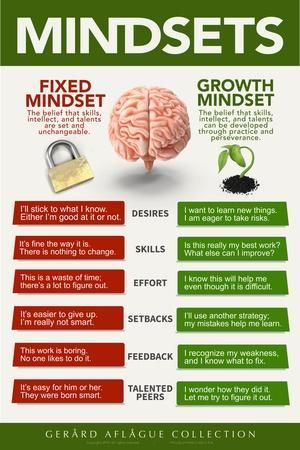

Neuroplasticity
Growth Mindset
- how understanding the principles of neuroplasticity benefits people
- Discuss how you might engage with the principals of neuroplasticity for your own benefit
- What are some of the ways to increase your neuroplasticity
- How will you integrate growth mindset into your learning journey?
- In this exploration, did anything surprise you?
- How will you integrate growth mindset into your learning journey
Neuroplasticity and Concussions in the regions damaged by a concussion, that communication between brain cells and the blood vessels that supply them can be disturbed. Sometimes, the brain might signal for too little oxygen to perform its task (hypoactivity); in other cases, it might signal for (and receive) more oxygen than required, overtaxing your system and causing it to ‘burn out’ more quickly (hyperactivity). With the right therapy, we can promote neuroplasticity in the affected neural network. This helps the brain to correct its signaling and use the right region for the right process and in the right way. Because of neural plasticity, your brain can restore connections to make that change happen.
the principle which stand out to me reagaurding neuroplasticity especially in this environment is "repition" the more I repeat writing code and continue on fostering mindful habits this will intern rewire my brain an foster greater productivity.
sleep, excersize, reading
In this exploration, did anything surprise you? Change for you? How will you integrate growth mindset into your learning journey? Link to a resource that you found particularly useful or engaging.
Growth Mindset
researcher and professor Carol Dweck uses the term mindset to describe the way people think about ability and talent. Dwack deliniates between two different mindsets that exist on a continuam the first is the fixed minset that suggests that your abilities are inate and unchangeable the second is a growth minset that which views it as somethiung that you can improve through practice in a fixed minset you view failure as permanet but in a growth minset you see failure as a chance to learn and even pivot. Those with a fixed mindset are more likely to view critical feedback as a personal attack where as those with a growth mindset will see it as a chance to improve where they can develop new systems with a fixed mindset your more likely to choose easier tasks and put in minimal effort. With a growth mindset you're more likely to embrace challenging tasks and work hard to improve. Those with a fixed mindset are more likely to give up when they face an obstacle meanwhile those with a growth mindset will view obstacles as a chance to experiment and solve problems in a fixed mindset the focus is on measurable accomplishments, but with a growth mindset the focus is more on a journey of continual improvement with a fixed mindset you are less likely to take creative risks but with a growth mindset creative mindsets are simply a way to innovate and improve. Ultimately your minset influences everything from creative risk taking to how you view feedback to whether or not you finish difficult tasks and in the end its one of the greatest factors in determining whether or not you grow and improve in your abilities.
yes, how mindfulness and being aware of you've been plays a kep role in your development. It also reinforced my beliefs about continuously goal setting and setting personal challenges. To try and better yourself, work hard continuously remind yourself that you are not defined by your failures but rather how you deal with those failure that surely felt like the end of the world.
My plan is to double down and find new ways to become a better version of myself in the work place and in my personal life. The key for me is routine, to make solid plan for daily routine and stick to them until they become habits. Also to incorperate afirmations into my daily routine to acompany journaling and excersize whihc has been a continuous practice in my life. Finally to find more balance
